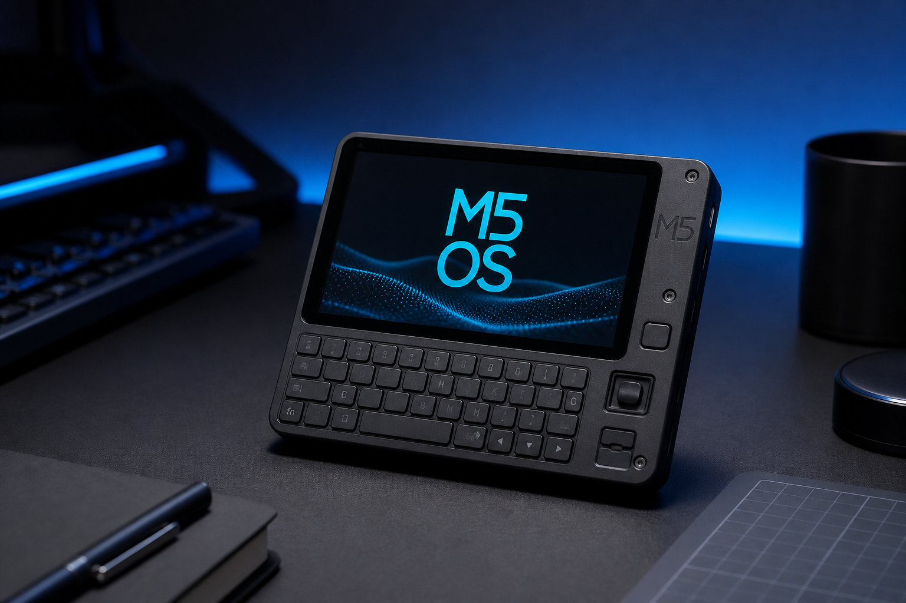

IR remote
$99.99
Remote Possibility
M5 Cardputer + 38 kHz IR module - learn OEM remotes, scan TV/fan/AC codes, save libraries on SD.
- M5 Cardputer + SD
- Remote Possibility IR firmware
- IR wiring quick-start
M5Stack Cardputer | ESP32-S3
The M5Stack Cardputer (ESP32-S3, ST7789 240x135 display, built-in QWERTY keyboard) is a keyboard-first pocket platform for authorized field work - separate from Cheap Yellow Display Wi-Fi builds. Two Philadelphia-assembled firmware SKUs share the same M5 Cardputer hardware: Remote Possibility is a universal IR remote (learn, library, scan); BLE Bot runs authorized BLE proximity lab workflows on the Cardputer keyboard UI.

Hardware
/firmware/ app packagesPhiladelphia SKUs ship as M5 Cardputer + SD card with M5 OS launcher pre-flashed, then either Remote Possibility or BLE Bot app firmware installed. DIY builders flash from M5_OS-Cardputer -> first.
PlatformIO target for all Cardputer field apps: env m5stack-cardputer, board esp32-s3-devkitc-1, library m5stack/M5Cardputer@^1.0.2.
Firmware SKU 1
Universal multi-transport remote for the M5 Cardputer - IR (38 kHz), RF 433/315 MHz OOK, and CC1101 sub-GHz (documented SPI wiring). Learn OEM remotes, browse SD libraries, scan TV/fan/AC NEC codes. Keyboard-first UX for gear you own.
/home/default/remotes/ - categories: TV, fan, AC, projector, audio, lightm5stack-cardputer (M5Cardputer + Arduino-IRremote)remote_possibility.bin| Key | Action |
|---|---|
; / w | Move selection up |
. / s | Move selection down |
l | Learn mode - capture IR from OEM remote |
f | Scan mode - try common NEC codes (lab demo) |
x | Send highlighted command |
| Enter | Select | send | save learned code |
y / n | Scan hit worked / try next |
` | Back |
Copy example remotes from the repo to SD, then browse Library. See CARDPUTER.md -> and HARDWARE.md ->.
Remote Possibility is an IR universal remote - it does not poll CyberThreatGotchi or run BLE scans. BLE Bot is a separate firmware image for authorized BLE proximity lab work on the same M5 Cardputer hardware.
Firmware SKU 2
Keyboard-first BLE scout / proximity lab firmware for the M5Stack Cardputer. NimBLE active scan, RSSI-sorted device list, and detail view on the ST7789 240x135 display - driven entirely by the QWERTY keyboard. Not a CYD Wi-Fi product.
BLE_SCAN_SECONDS=5 per pass)BLE_REFRESH_MS=8000 (configurable in platformio.ini);/w up, ./s down, Enter detail, r rescan, ` backm5stack/M5Cardputer@^1.0.2) - native Cardputer display and keyboard APIble_bot.bin on SD /firmware/ or manifest OTApio run -e m5stack-cardputer (see platformio/README.md mirror ->)| Key | Action |
|---|---|
; / w | Move selection up |
. / s | Move selection down |
| Enter / Space | Device detail (address, RSSI) |
r | Rescan now |
` | Back from detail view |
Source repo: salvador-Data/BLE-Bot-Cardputer -> (maintainer account: github.com/salvadorData ->). Local mirror: docs/ble-bot/README.md ->.
Authorized BLE lab workflows only - scan networks and devices you own or have written permission to test.
Lineage
BLE Bot firmware design and field-research lineage originates from WhiteHat CyberSecurity firm workflows. Hacker Planet LLC assembles Philadelphia SKUs, maintains open-source repos, and ships pre-flashed M5 Cardputer units. Salvador Data (salvador-Data | u/SalvadorData) is the firmware author and repo maintainer.
Shop SKUs
M5 Cardputer + 38 kHz IR module - learn OEM remotes, scan TV/fan/AC codes, save libraries on SD.
M5 Cardputer QWERTY keyboard UI for authorized BLE scout and proximity lab on ST7789 240x135 - not a CYD product.
Bundled in the Field Pack ($279) with CyberThreatGotchi core. DIY: flash from M5_OS-Cardputer ->.
Firmware
Flash the M5 OS launcher first, then install Remote Possibility or BLE Bot packages from the manifest or SD
/firmware/ folder. Philadelphia SKUs ship pre-flashed.
Verify each package SHA-256 digest in the manifest before OTA download or flash - see
M5 OS SECURITY.md ->.
platformio.ini is at the M5_OS-Cardputer repo root — there is no platformio/ subfolder.
BLE Bot and Remote Possibility use platformio/ in their own repos; do not cd platformio for M5 OS.
cd C:\Users\Owner\Projects\M5_OS-Cardputer
& "$env:USERPROFILE\.platformio\penv\Scripts\pio.exe" run -e m5stack-cardputer
& "$env:USERPROFILE\.platformio\penv\Scripts\pio.exe" run -e m5stack-cardputer -t upload/firmware/, M5Burner recovery, serial logging (env m5stack-cardputer)
.bin assets when tagged
sha256 per entry)
legacy/ctg_client/
ble_bot.bin package
m5stack-cardputer
ble_bot.bin or build locally from PlatformIO source
/firmware/ layout, and return-to-launcher workflow